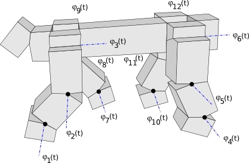
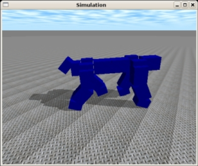

El programa que estoy usando para hacer los dibujos de mi tesis es el Inkscape. Es un programa de dibujo en 2D, libre y multiplataforma (Linux, Mac, Windows). Lo mejor es que los ficheros se graban en el formato vectorial SVG, que es abierto y basado en XML.
Yo descubrí este programa el año pasado, cuando acudí a la iParty9 en Castellón de la Plana. Desde entonces lo estoy usando.
Nunca he sido un buen dibujante, pero con el inkscape puedo hacer muy fácilmente dibujos como este robot cuadrúpedo modular que he dibujado hoy. La técnica es muy sencilla. A partir de una foto o pantallazo lo único que tienes que hacer es importarla en inkscape y “calcarlo”, igual que hacíamos en prescolar 😉
El cuadrúpedo lo he “calcado” de esta imagen que he geneado con el MRSuite.
